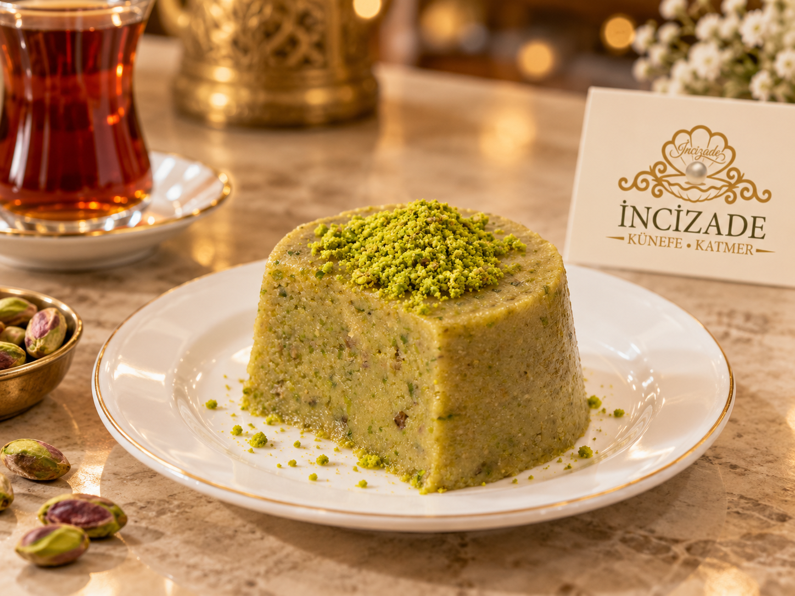

Kaşık kaşık gelenekFıstıklı İrmik
Fıstıklı İrmik
Helvası
İrmiğin tanıdık kavruk kokusu, fıstığın lezzetiyle tamamlanır.
Kavrulmuş irmiğin sıcak kokusu, fıstığın kendine özgü tadıyla bir araya gelir. Fıstıklı irmik helvası, kaşık kaşık tadına varılan dokusuyla ev sofralarının tanıdık huzurunu hatırlatır.
Her lokması sohbeti yavaşlatan, tadı damakta kalan bir gelenek. Çay eşliğinde ya da yemeğin ardından, sade bir tatlı mutluluğu arayanlara.
Ürün hakkında bilgi al